File: 000450.gt.txt (if the image is defective, simply delete all Arabic text and the line will be excluded)
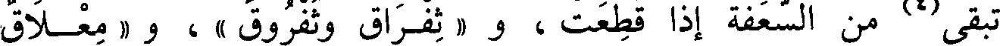
File: 000451.gt.txt (if the image is defective, simply delete all Arabic text and the line will be excluded)
باب أفعل وفعل
File: 000452.gt.txt (if the image is defective, simply delete all Arabic text and the line will be excluded)
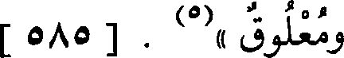
ومعلوق »(5) . [ 585 ]
File: 000453.gt.txt (if the image is defective, simply delete all Arabic text and the line will be excluded)
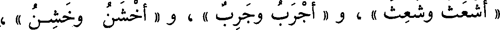
« أشعث وشعث » ، و « أجرب وجرب » ، و « أخشن وخشن » ،
File: 000454.gt.txt (if the image is defective, simply delete all Arabic text and the line will be excluded)
باب معاني أبنية الأسماء
File: 000455.gt.txt (if the image is defective, simply delete all Arabic text and the line will be excluded)
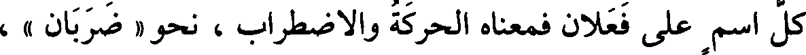
كل اسم على فعلان فمعناه الحركة والاضطراب ، نحو « ضربان » ،
File: 000456.gt.txt (if the image is defective, simply delete all Arabic text and the line will be excluded)
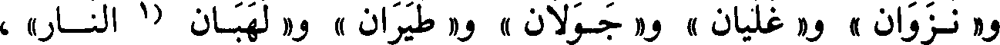
و« نزوان » و« غليان » و« جولان » و« طيران » و« لهبان (1 النار» ،
File: 000457.gt.txt (if the image is defective, simply delete all Arabic text and the line will be excluded)
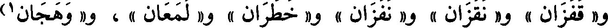
و« قفزان » و« نقزان » و« نفزان » و« خطران » و« لمعان » ، و« وهجان1)
File: 000458.gt.txt (if the image is defective, simply delete all Arabic text and the line will be excluded)
النار » و« دوران » و« طوفان » ، وأشباه(2) ذلك كثير(3) .
File: 000459.gt.txt (if the image is defective, simply delete all Arabic text and the line will be excluded)
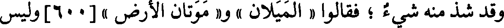
وقد شذ منه شيء ؛ فقالوا « الميلان » و« موتان الأرض » [600]وليس
File: 000460.gt.txt (if the image is defective, simply delete all Arabic text and the line will be excluded)
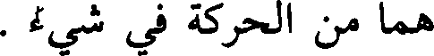
هما من الحركة في شيء .
File: 000461.gt.txt (if the image is defective, simply delete all Arabic text and the line will be excluded)
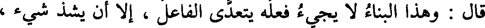
قال : وهذا البناء لا يجيء فعله يتعدى الفاعل ، إلا أن يشذ شيء ،
File: 000462.gt.txt (if the image is defective, simply delete all Arabic text and the line will be excluded)
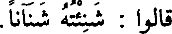
قالوا : شنئته شنآنا .
File: 000463.gt.txt (if the image is defective, simply delete all Arabic text and the line will be excluded)
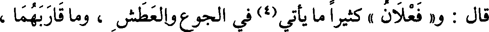
قال : و« فعلان » كثيرا ما يأتي(4) في الجوع والعطش ، وما قاربهما ،
File: 000464.gt.txt (if the image is defective, simply delete all Arabic text and the line will be excluded)
قالوا : « ظمآن » ، و« عطشان » ، و« صديان » ، و« هيمان « بمعنى
File: 000465.gt.txt (if the image is defective, simply delete all Arabic text and the line will be excluded)
عطشان .
File: 000466.gt.txt (if the image is defective, simply delete all Arabic text and the line will be excluded)
وقالوا : « جوعان » و« غرثان » ، و« علهان » وهو الشديد الغرث
File: 000467.gt.txt (if the image is defective, simply delete all Arabic text and the line will be excluded)
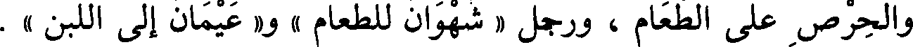
والحرص على الطعام ، ورجل « شهوان للطعام » و« عيمان إلى اللبن » .
File: 000468.gt.txt (if the image is defective, simply delete all Arabic text and the line will be excluded)
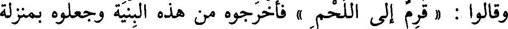
وقالوا : « قرم إلى اللحم » فأخرجوه من هذه البنية وجعلوه بمنزلة
File: 000469.gt.txt (if the image is defective, simply delete all Arabic text and the line will be excluded)
الداء ، كما قالوا : دو ، ووجع .
File: 000470.gt.txt (if the image is defective, simply delete all Arabic text and the line will be excluded)
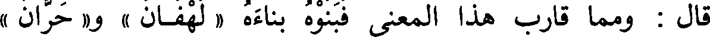
قال : ومما قارب هذا المعنى فبنوه بناءه « لهفان » و« حران »
File: 000471.gt.txt (if the image is defective, simply delete all Arabic text and the line will be excluded)
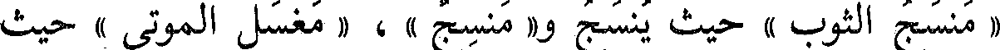
« منسج الثوب » حيث ينسج و« منسج » ، « مغسل الموتى » حيث
File: 000472.gt.txt (if the image is defective, simply delete all Arabic text and the line will be excluded)
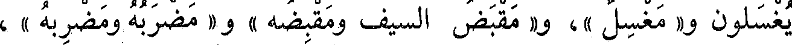
يغسلون و« مغسل »، و« مقبض السيف ومقبضه » و« مضربه ومضربه » ،
File: 000473.gt.txt (if the image is defective, simply delete all Arabic text and the line will be excluded)
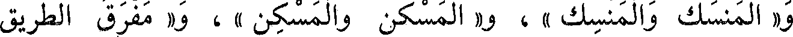
و« المنسك والمنسك » ، و« المسكن والمسكن » ، و« مفرق الطريق
File: 000474.gt.txt (if the image is defective, simply delete all Arabic text and the line will be excluded)
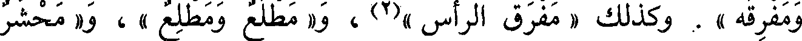
ومفرقه » . وكذلك « مفرق الرأس »(2) ، و« مطلع ومطلع » ، و« محشر
File: 000475.gt.txt (if the image is defective, simply delete all Arabic text and the line will be excluded)
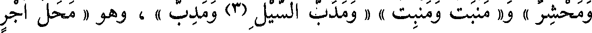
ومحشر » و« منبت ومنبت » « ومدب السيل (3) ومدب » ، وهو « محل أجر
File: 000476.gt.txt (if the image is defective, simply delete all Arabic text and the line will be excluded)
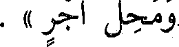
ومحل أجر » .
File: 000477.gt.txt (if the image is defective, simply delete all Arabic text and the line will be excluded)
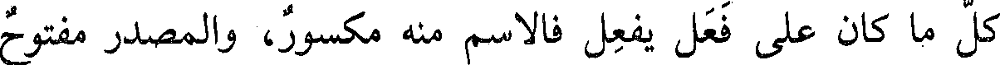
كل ما كان على فعل يفعل فالاسم منه مكسور، والمصدر مفتوح
File: 000478.gt.txt (if the image is defective, simply delete all Arabic text and the line will be excluded)
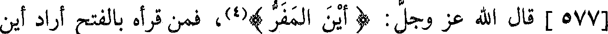
[577] قال الله عز وجل : ( أين المفر )(4)، فمن قرأه بالفتح أراد أين
File: 000479.gt.txt (if the image is defective, simply delete all Arabic text and the line will be excluded)
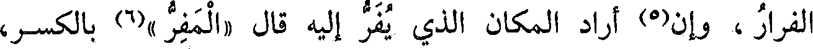
الفرار ، وإن(5) أراد المكان الذي يفر إليه قال «المفر »(6) بالكسر،
To Save: `Ctrl+s`, make sure to choose `Webpage, complete`!